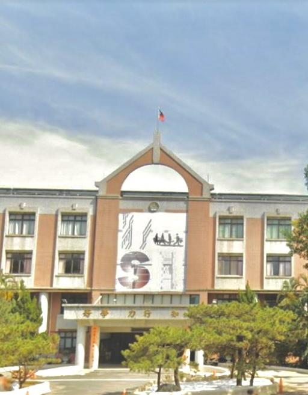

我的高中
新竹女中

新竹女中
新竹女中
創建於 1924 年
國立新竹女子高級中學。竹女以悠久的優良傳統為基礎，歷屆校長的精心規劃奠定了堅實的基礎，雖然當前的學生事務工作繁瑣，但更加多樣化、活潑、創新且別出心裁。關於學生的食、衣、住、行、育、清潔與應對、體能訓練、學生社團的發展與管理、各種講座與課外活動的規劃設計、國際教育旅行、參與服務學習等活動，我們都積極融合人權法治教育、性別平等教育、環保教育與生命教育。我們希望學生能具備現代公民意識，關注社會議題；鼓勵學生探索興趣，了解自我，通過參與活動培養多元視野、時間管理能力、解決問題能力、領導能力及人際交往能力，為未來作出最適應的選擇；我們也希望聰慧傑出的竹女具備「勤勞、踏實、積極、熱情」的特質，充分發揮所長，造福他人，並在社會各階層發光發熱。